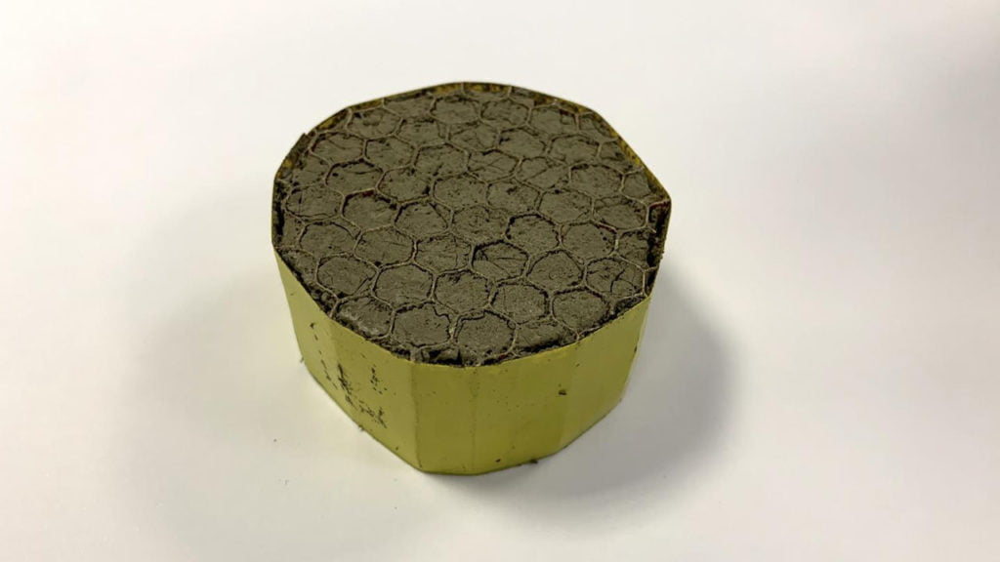

ဒီလို အသံကျယ်လောင်တာကြောင့် အင်ဂျင်သံကို လျှော့ချ ပေးနိုင်ဖို့ အသံလုံ (Sound Insulator) ပစ္စည်းတွေနဲ့ ကာဖို့ ကြံစည်ခဲ့ကြပေမယ့် ဒီလို ကာတဲ့အတွက် တိုးပွားလာမယ့် အလေးချိန်နဲ့ အဆင်မပြေလှတာကြောင့် အခုထိတော့ ကာရံနိုင်ခြင်း မရှိသေးပါဘူး။
ဗြိတိန် နိုင်ငံ ဘာသ် တက္ကသိုလ် (University of Bath) က သိပ္ပံ ပညာရှင် တွေဟာ ဂရပ်ဖင်း (Graphene) ကို အခြေခံတဲ့ အလွန် ပေါ့ပါးတဲ့ အသံလုံ ပစ္စည်းတစ်မျိုးကို စမ်းသပ်အောင်မြင် ခဲ့ကြပါတယ်။ ဒီ ဂရပ်ဖင်း နဲ့ ပြုလုပ်ထားတဲ အေရိုဂျဲ (aerogel) ဟာ အလွန် ပေါ့ပါးပြီး ဂျက်အင်ဂျင် တွေက ထွက်တဲ့ အသံကို သိသိသာသာ လျှော့ချ ပေးနိုင် လိမ့်မယ်လို့ ဆိုပါတယ်။
အခု ပစ္စည်းဟာ ဓါတုဗေဒ အခေါ်အားဖြင့် graphene oxide-polyvinyl alcohol aerogel လို့ အမည်ပေးထားပါတယ်။ တစ်ကုဗမီတာ (အလျား ၁ မီတာ x အနံ ၁ မီိတာ x အမြင့် ၁ မီတာ ထုထည် ) ကိုမှ ၂.၁ ကီလိုဂရမ် (၄.၆ ပေါင်) ပဲ လေးပါတယ်။ ဒါဟာ အခုထက်ထိ ထုတ်လုပ်ခဲ့ ဖူးသမျှ အသံကာ ပစ္စည်းတွေ ထဲမှာ အပေါ့ပါးဆုံး အသံကာ ပစ္စည်း ဖြစ်ပါတယ်။
သုတေသန တွေအရ ဒီ ဂရပ်ဖင်း နဲ့ လုပ်ထားတဲ့ အသံကာ ပစ္စည်းဟာ အသံရဲ့ ကျယ်လောင်မှုကို ၁၆ ဒက်ဆီဘယ် အထိ လျှော့ချနိုင်မယ်လို့ ဆိုပါတယ်။ ဒါကို ဥပမာ ပြရရင် ဂျက်အင်ဂျင်ရဲ့ အသံကို မီတာ ၁၀၀ အကွာကနေ ကြားရတာဟာ ၁၀၅-၁၁၀ ဒက်ဆီဘယ်လောက် ရှိပါတယ်။ ဆံပင် အခြောက်ခံစက် (Hair dryer) ရဲ့ အသံကတော့ အနီးကပ် နားထောင်ရင် ဒက်ဆီဘယ် ၉၀ လောက် ရှိပါတယ်။ ဒီတော့ မီတာ ၁၀၀ က ကြားရမယ့် ဂျက်အင်ဂျင် အသံကို ဆံပင် အခြောက်ခံစက်က ထွက်တဲ့ အသံလောက်ထိ လျှော့ချလိုက် နိုင်မှာ ဖြစ်ပါတယ်။

လက်ရှိမှာတော့ ဒီ အသံလုံ ပစ္စည်းရဲ့ အပူဒါဏ် ခံနိုင်အားကို တိုးမြှင့်နိုင်ဖို့ ပညာရှင်တွေက ကြိုးစားနေ ကြပါတယ်။ လေယာဉ် အင်ဂျင် အတွင်းမှာ အသုံးပြုမှာ ဖြစ်တာကြောင့် အပူဒါဏ် ခံနိုင်အား များရင် သူ့ရဲ့ သက်တမ်းကို လဲ ပိုပြီး ကြာကြား အသုံးပြုနိုင်မှာ ဖြစ်ပါတယ်။
သုတေသီ တွေကတော့ ဒီ အသံကာ ပစ္စည်းကို လေယာဉ် အင်ဂျင် အတွင်းပိုင်း မှာတင် မက အခြား နေရာ တွေမှာလဲ အသုံးပြုလာ ကြလိမ့်မယ်လို့ ယုံကြည်ကြပါတယ်။ အဆောက်အဦတွေ ဆောက်လုပ်တဲ့နေရာတွေ၊ မော်တော်ကား အတွင်းပိုင်းတွေ အသံလုံဖို့၊ ရေကြောင်း ပို့ဆောင်ရေး အစ ရှိသဖြင့် နေရာ အများအပြားအတွက် အသုံးဝင်လိမ့်မယ်လို့ ဆိုပါတယ်။
အခု ပစ္စည်းကို ထုတ်လုပ်ရာမှာ ဂရပ်ဖင်း အောက်ဆိုဒ် နဲ့ ပိုလီမာနဲ့ကို ရောပြီး ကြက်ဥ ခေါက်သလို ခေါက်မွှေပေးတာ ဖြစ်ပါတယ်။ ရလာတဲ့ ပစ္စည်းက လေအိတ်လေးတွေ အများအပြား ပါတဲ့ ဖေါ့လို ရေမြှုပ်လို အရာ ဝတ္ထု ရလာတာ ဖြစ်ပါတယ်။ အတွင်းက လေအိတ်လေးတွေက အသံလှိုင်း တွေကို ဖမ်းထားသလိုပဲ ဒီ ပစ္စည်းကိုလဲ ပေါ့ပါးစေပါတယ်။
ပထမ အဆင့် အနေနဲ့ လေယာဉ် ထုတ်လုပ်တဲ့ ကုမ္ပဏီ တွေနဲ့ ပူးပေါင်းပြီး လက်တွေ့ စမ်းသပ်မှုတွေ ပြုလုပ်သွားမယ်လို့ သိရပါတယ်။ ဒါ့အပြင် ဟယ်လီ ကော်ပတာ အင်ဂျင်တွေနဲ့ ကားအင်ဂျင် တွေမှာလဲ စမ်းသပ်သွားဖို့ စီစဉ်နေပါတယ်။ ဒီ ပစ္စည်းကို နောက် ၁၈ လ အတွင်း စီးပွားဖြစ် ထုတ်လုပ်သွားနိုင်ဖို့ ရည်ရွယ်ထားကြပါတယ်။
Reference: World’s lightest sound insulation could significantly reduce aircraft engine noise | Inceptive Mind